All the features in this
article are available only in XavaPro
Since XavaPro 7.1 you can
configure user identification to use Azure AD, allowing you to use
Single
Sign-On (SSO). This way, the user can authenticate once and access
all your XavaPro applications and other non-XavaPro applications that also
use Azure AD. Furthermore, using Azure AD enables you to utilize
two-step
authentication for your XavaPro applications.
In the
Admin folder, you have a module called SSO to configure
Azure AD:
If you check the Enabled
checkbox and fill in the remaining fields with the correct configuration
of your Azure AD for your application, when you sign in, you will have a
new button labeled SIGN IN WITH AZURE AD:
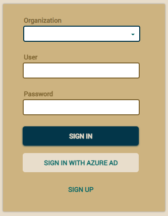
If the user clicks on SIGN IN WITH
AZURE AD, he will be given the option to sign in using his Azure
credentials:
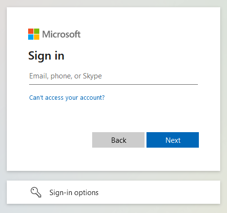
Furthermore, if the user is
already signed in on that browser, they will access the application
without being prompted for authentication. The user needs to be added to
the application in Azure AD configuration. For versions prior to 7.5, the
user must also be registered as a XavaPro user in the application with the
corresponding roles assigned, and the user must be registered in the
XavaPro application with the same name as in Azure. Starting from version
7.5, Azure AD users no longer need to be manually registered in XavaPro.
When an Azure AD user authenticates against the application for the first
time, if they don't exist in XavaPro, they will be automatically
registered. If the application has an "azure ad" role defined, this role
will be automatically assigned to the new user. New organizations created
from version 7.5 onwards have the "azure ad" role created by default, but
it can also be created manually if needed.
Configure the application in Azure AD
If you already use Azure AD in your organization, you will be familiar
with configuring applications and assigning users to them. You will also
know where to find the values for the XavaPro SSO form. However, if you
have never used Azure AD before, don't worry. Here is a guide to help you
register your application in Azure AD. Azure AD offers a free tier good
enough to enable SSO in your XavaPro applications.
Azure AD Control Panel
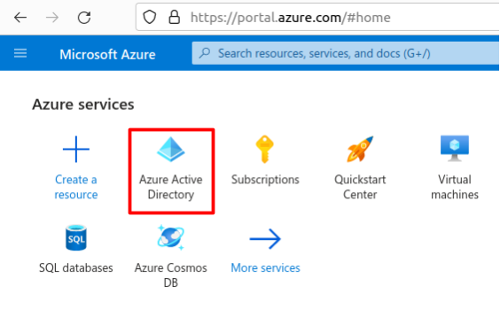
This takes you to the Azure AD
administration page:
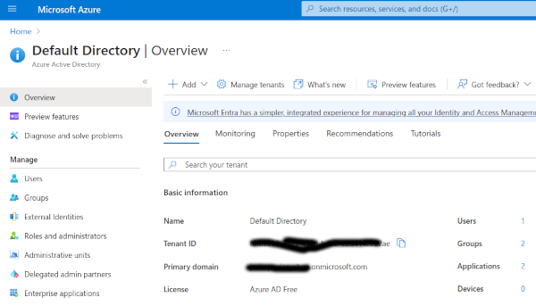
Add application in Azure AD
Let's assume that we have a
XavaPro application called invoicing and we want to register it in
Azure AD. We should follow the next steps.
First, open the Add menu
and click on App registration:
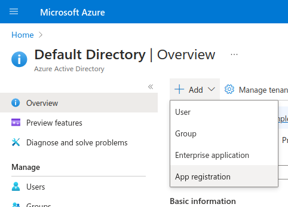
In the
Register an application page that appears, enter your
application's registration information:
- In the Name field, enter "invoicing".
- Under Supported account types, select Accounts in this
organizational directory only.
- In the Redirect URI section, select Web in the
combo-box and enter the following redirect URI: http://localhost:8080/invoicing/sso/azure/redirect
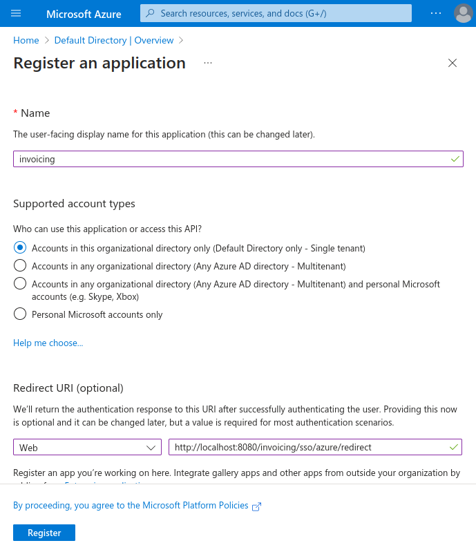
Select
Register to create the application.
Create secret
On the Azure AD administration page, choose the App registrations
option from the left menu. This will display the list of your
applications. Click on invoicing.
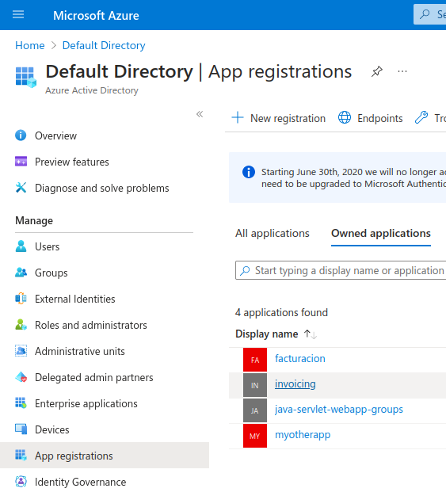
In the app's registration screen, click on the
Certificates &
secrets option in the left to open the page where we can generate
secrets and upload certificates. In the
Client secrets section,
click on
New client secret:
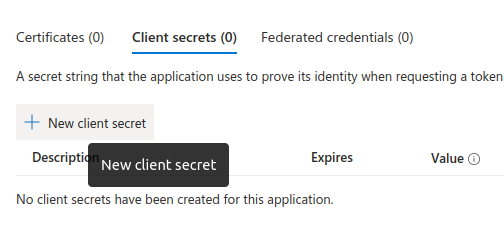
Type a key description (for instance app secret), Select one of the
available key durations (6 months, 1 year, 2 years, or Never Expires)
as per your security concerns.
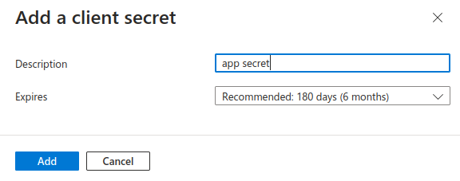
The generated key value will be displayed when you click the Add
button. Copy the generated value for use in the steps later. You'll
need this key later in your XavaPro SSO configuration. This key value
will not be displayed again, and is not retrievable by any other
means, so make sure to note it from the Azure portal before navigating
to any other screen or section.
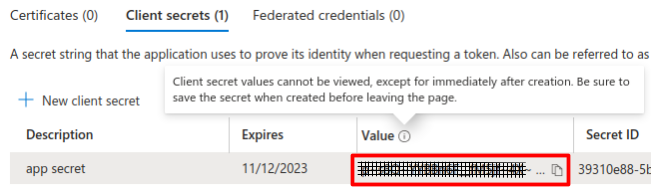
Configure the Azure AD application in XavaPro
In Azure AD, go to App registrations and select your
application to view its essential information. Then, in your XavaPro
application, open the SSO module within the Admin folder and
fill in the required information:
- Enter the Client id in XavaPro with the Application
(client) ID from Azure AD.
- In the XavaPro Authority field, add the prefix https://login.microsoftonline.com/
and append the Azure AD Directory (tenant) ID.
- In the XavaPro Secret field, enter the application secret
you created in the previous step and have presumably noted down.
In this way:
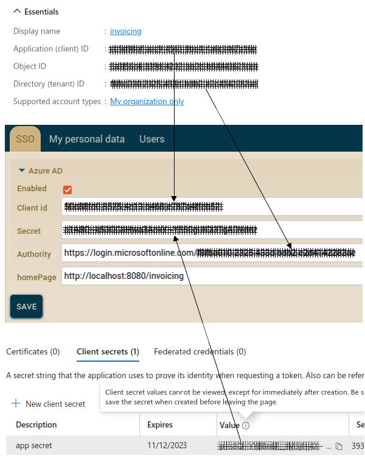
Check the Enabled checkbox, and your application will now
work with Azure AD. Remember to register users in your XavaPro
application with the corresponding roles; otherwise, it will not work.
If you do this with other XavaPro applications, you will be able to
authenticate yourself the first time and access the other applications
without login. Additionally, you can enable two-step authentication
for your users from Azure AD.